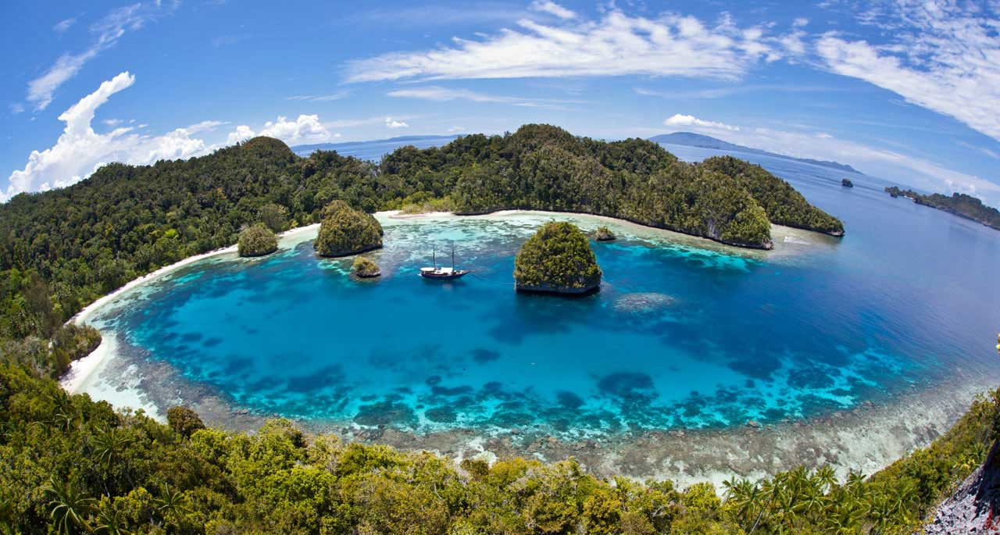
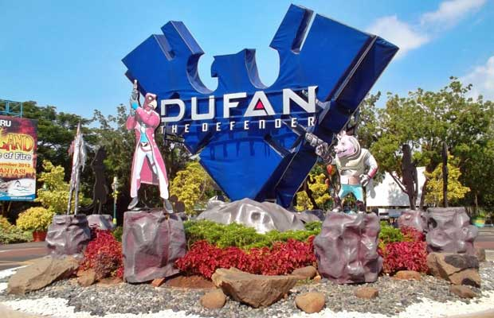
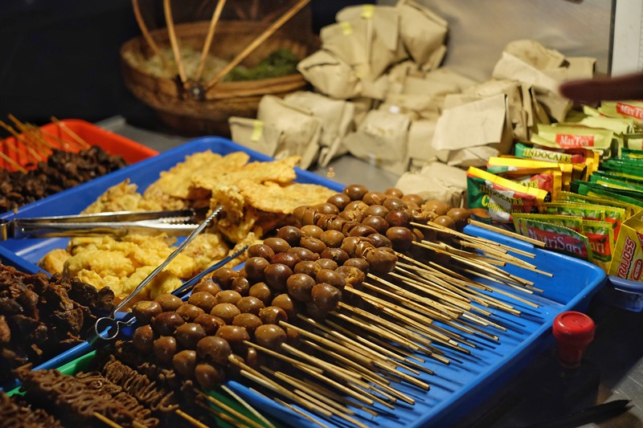

Wisata Alam

Kepulauan Raja Ampat adalah destinasi nomor 1 yang wajib Anda kunjungi sebelum memutuskan untuk berlibur ke luar negeri. Mengapa demikian? Kepulauan yang terletak di ujung timur Indonesia ini adalah surga kekayaan bawah laut terlengkap di bumi. Raja Ampat sendiri merupakan nama yang diberikan bagi keempat pulau indah yang berasal dari mitos lokal, yaitu Waigeo, Salawati, Batanta, dan Misool. Wisatawan dari berbagai penjuru dunia mati-matian ingin datang ke pulau ini untuk menikmati 540 jenis karang, 1.511 spesies ikan, serta 700 jenis moluska. Bahkan The Nature Conservancy dan Conservation International mengatakan bahwa 75% spesies laut dunia bisa Anda temukan di pulau ini. Raja Ampat di Papua adalah surga bagi para pecinta diving.
Wisata Buatan

Dunia Fantasi dibuka untuk umum sejak 29 Agustus 1985, dikenal dengan sebutan Dufan. Terletak di antara Jakarta Barat dan Utara. Dufan merupakan taman hiburan edukatif terbesar dan taman wisata internasional pertama di Indonesia.
Dufan memiliki 25 wahana permainan berteknologi tinggi. Dufan dibagi menjadi 8 kawasan, yakni Kawasan Jakarta Tempoe Doeloe, Kawasan Asia, Kawasan Hikayat, Kawasan Yunani, Kawasan Eropa, Kawasan Indonesia, Kawasan Amerika, dan Kawasan Kalila. Dufan memberikan sensasi perjalanan di seluruh dunia. Buka antara pukul 10.00 – 18.00.
Wisata Kuliner

Yogyakarta kotanya pendidikan. Kota ini menjadi tujuan para pelajar yang ingin menimba ilmu dan menikmati betapa kayanya budaya asli Indonesia. Semakin lengkap rasanya karena ragam kuliner yang ada di kota ini. Salah satunya adalah angkringan dengan menu andalan sego kucing dan es teh manisnya. Sego kucing di bungkus dengan pincukan ukuran kecil, dengan lauk yang terdiri dari tahu, tempe, ayam, jeroan, telur, dan sebagainya sesuai selera. Rasanya mantap dan harganya merakyat, sangat ekonomis. Nasi gudeg adalah menu lain yang tidak bisa Anda lewatkan disini. Sayur nangka muda dengan tambahan lauk seperti tahu, tempe, ayam, telur, semakin membuat kita kangen kota Yogyakarta.